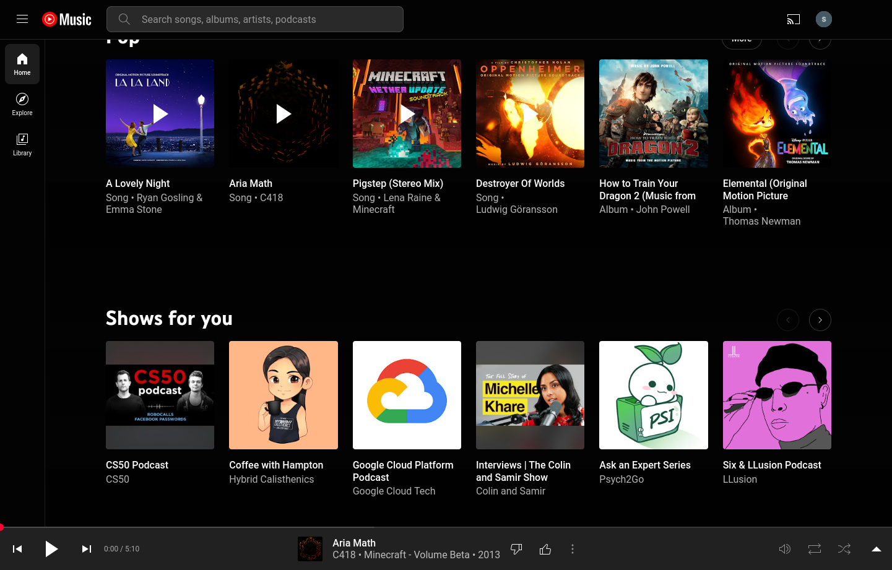
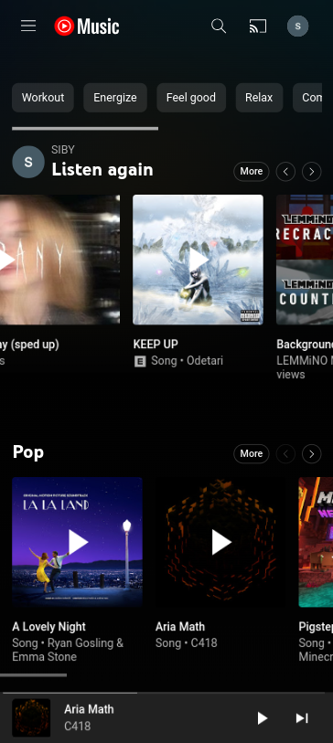

Instructions for Responsive Design Technical Assessment
GoalMake a simple YouTube Music clone using
React & TypeScript
ScoreOut of 100 - for code quality,
frontend design and responsiveness.
Maximum Time3 hours


Project Details
Description
-
You're tasked with building a simple YouTube Music clone using React
& TypeScript.
-
The app should be responsive and work on all devices. Use the above
images (desktop left, mobile right) for reference.
-
No functionality is expected of the app - the main goal of
this task is to flex on your responsive design skills - basically
making sure the app looks good on all devices.
-
Feel free to use dummy data and images when building your
clone of the above interface.
-
You are free to use any additional frameworks or libraries
(you may have to use icon libraries), but ensure that you use
React as your only JavaScript framework + TypeScript as your
scripting language.
Tech Stack
-
LanguagesTypeScript (.tsx) and CSS w/
libaries / frameworks of your choice
-
FrontendReact w/ Vite as the build tool.
-
Version ControlGit and Github is used to
host this project's respository and for submitting your work.
-
Since this assessment will primarily use Git & GitHub, you will need
a GitHub account and some experience working with the Git
CLI.
Congratulations on completing this assessment! You may now submit a pull
request (ensuring that all local changes have been pushed) to the main
repository from your forked repository to confirm your submission.
Make sure to include your name in the pull request message, along with a
README.md if you wish to explain / comment on any of the solutions for
the above.